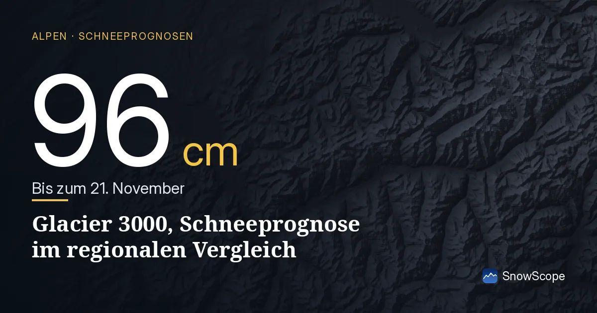
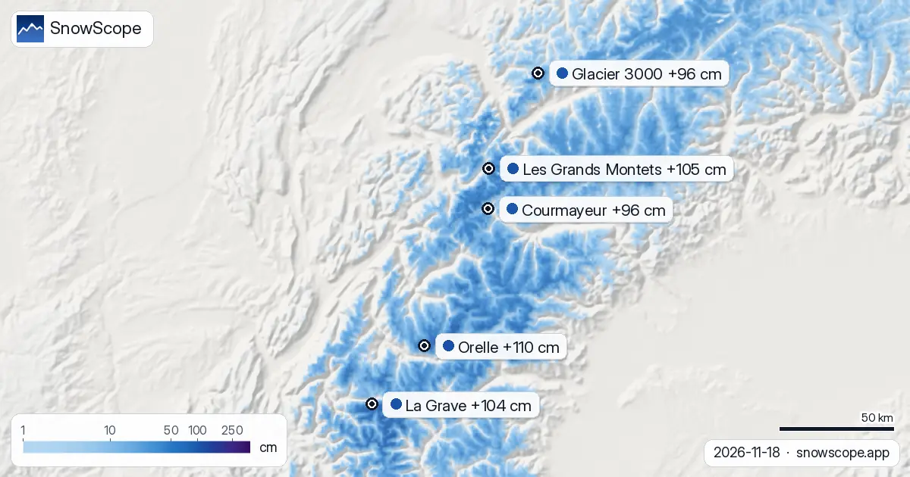

Glacier 3000, Schneeprognose im regionalen Vergleich: 96 cm bis zum 21. November
Drei Tage Dauersneefall kommen in die Alpen. Orelle erwischt es am schlimmsten: 110 cm bis 21. November, mit den stärksten Fällen am Donnerstag 19. und Freitag 20. November. Die Prognose zeigt auch 105 cm in Les Grands Montets und 104 cm in La Grave, aber Timing und Summen können sich verschieben – schau vor der Fahrt nochmal in die Karte.
Die Live-Schneeprognose für Glacier 3000 in der SnowScope-AppSchneehöhen, Pulverschnee-Alarme und 3D-Karte, gratis.
Welche Höhe bekommt Schnee, welche bleibt trocken
Die Höhe entscheidet jetzt alles. In Orelle hat die Spitze (3.221 m) schon 82 cm und bekommt die nächste Woche 122 cm dazu. Auf Mittelhöhe (2.779 m) ist die Schneedecke dünner – heute 48 cm –, aber 110 cm Neuschnee kommen. Die Talstation (2.338 m) hat nur 21 cm und bekommt 96 cm dazu.
Les Grands Montets zeigt eine noch steilere Aufteilung. Das Gipfelgebiet (2.768 m) hat jetzt 44 cm und sammelt 133 cm. Mittelhöhe (2.001 m) liegt bei 12 cm, 99 cm sind prognostiziert. Die Talstation (1.234 m) hat noch nichts – gerade mal 21 cm erwartet bis Ende nächste Woche.
Anfang November ist dieser Höhenunterschied wichtig, wie lange Schnee hält. Nassschnee in der Talsohle schmilzt schnell weg; Pulver oben bleibt kalt und trocken länger.
| Skigebiet | Schneehöhe | Neuschnee, 72 h | Erwartet, nächste Tage | Gipfel |
|---|---|---|---|---|
| Orelle | 111 cm | 86 cm | 110 cm | 3.221 m |
| Les Grands Montets | 60 cm | 82 cm | 105 cm | 2.768 m |
| La Grave | 105 cm | 77 cm | 104 cm | 3.543 m |
| Courmayeur | 45 cm | 74 cm | 96 cm | 2.749 m |
| Glacier 3000 | 52 cm | 77 cm | 96 cm | 2.931 m |

Wann die Stürme kommen
Mittwoch 18. November ist schon da: 34 cm in Orelle, 29 cm in Les Grands Montets. Donnerstag 19. November bringt den ersten großen Schub: 50 cm in Orelle, 42 cm in Les Grands Montets. Freitag 20. November ist der stärkste Tag: 52 cm in Orelle, 53 cm in Les Grands Montets.
Samstag 21. November wird leichter – nur 8 cm in Orelle, 10 cm in Les Grands Montets –, also ist das beste Pulverskifahren Freitagmittag und Samstagvormittag, bevor die Sonne es weich macht.
Nassschneerisiko: Pass auf die Höhe der Null-Grad-Grenze auf
Neuschnee ist nicht alles Pulver. Donnerstag 19. November in Orelle steigt die Null-Grad-Grenze von 2.390 m auf 2.780 m. Das bedeutet nasser, schwerer Schnee unter 2.780 m und leichterer Schnee darüber. Fahr an dem Tag so hoch wie möglich.
Les Grands Montets hat härtere Bedingungen: Die Null-Grad-Grenze bleibt tief, zwischen 1.920 m und 2.270 m am Donnerstag. Nur die oberen Hänge kriegen trockenen Schnee; untere Pisten werden klebrig.
Bis Freitag 20. November wärmt sich La Grave weiter auf, die Null-Grad-Grenze erreicht 3.210 m – der größte Teil des Skigebiets sieht Nassschnee. Samstag ist kälter und setzt Bedingungen zurück.
Wie diese Woche mit November-Durchschnitten vergleicht
Auf Mittelhöhe (2.779 m) hat Orelle heute 36 cm. Der Langzeit-Durchschnitt für Mitte November liegt bei 58 cm, die Bedingungen sind also dünner als normal. Aber das ist tiefer als zum gleichen Zeitpunkt in 15 der letzten 46 Winter, für die wir Daten haben.
Courmayeur zeigt das Gegenmuster: auf Mittelhöhe (1.976 m) hat es heute 33 cm gegen einen November-Durchschnitt von 22 cm. Dieses Skigebiet läuft schneller als sein normales Tempo – 32 der letzten 46 November waren an diesem Datum flacher.
Was du mitnehmen solltest und wo du fahren solltest
Nimm beide Wachstypen mit. Donnerstag und Freitagmorgen bieten die hohen Hänge in Orelle und Les Grands Montets Pulver. Ab Freitagnachmittag wird Nassschnee unter 2.500 m üblich.
Wenn du Freitagfrüh fahren willst (vor der Sonne), sind Orellas Spitze und La Graves Höhenterrain am besten. Wenn du Samstag fährst, wähle wieder hohe Lagen; die Talbereiche können bis Vormittag zu Breiheit werden.
Tipps für Skifahrer
- Donnerstag und Freitag sind die Schnee-Spitzentage. Plan deine Fahrt für diese Tage, wenn möglich, besonders für Höhenterrain.
- Null-Grad-Grenze über 2.780 m Donnerstag in Orelle bedeutet Nassschnee auf Mittelhöhe. Fahr Freitagmorgen ganz oben hin, um trockenes Pulver zu finden.
- In Les Grands Montets bleib Donnerstag und Freitag über 2.270 m, um schweren Nassschnee weiter unten zu vermeiden.
- Frischer Schnee ist zu dieser Jahreszeit stellenweise dünn und kann Steine verbergen. Pass auf deine Linie auf und bleib wachsam, besonders auf Pisten, die du nicht kennst.
- Bevor du abseits der Piste fährst oder Skitourengehen gehst, check die amtliche Lawinenbulletin für deine Region und die Lawinenprognose deines Skigebiets.
- Prognosen verschieben sich. Schau Mittwochabend nochmal in die Karte, um Timing zu bestätigen, bevor du Donnerstagmorgen packst.
Zu diesen Zahlen
Die Schneehöhen der Skigebiete sind der meiste Schnee in den oberen Hängen am angegebenen Tag; es sind Schätzungen für eine Fläche, keine Messung an einem Punkt. Prognosen können sich ändern. Lies vor dem Freeriden immer den offiziellen Lawinenlagebericht.
Offizielle Lawinenlageberichte: EAWS (Alps)
Diesen Bericht zitieren
Für Forschung, Lehre oder Presse: Zahlen und Grafiken sind unter CC BY 4.0 mit dieser Quellenangabe frei nutzbar.
SnowScope (2026), Glacier 3000, Schneeprognose im regionalen Vergleich: 96 cm bis zum 21. November, https://snowscope.app/blog/de/2026/11/alps-glacier-3000-snow-forecast-18-november-2026.html, abgerufen am 2026-11-18
SnowScope (Atlas Labs). (2026, November 18). Glacier 3000, Schneeprognose im regionalen Vergleich: 96 cm bis zum 21. November. SnowScope snow reports. https://snowscope.app/blog/de/2026/11/alps-glacier-3000-snow-forecast-18-november-2026.html
BibTeX
@misc{snowscope2026alpsglacier3000snowforec,
author = {{SnowScope (Atlas Labs)}},
title = {Glacier 3000, Schneeprognose im regionalen Vergleich: 96 cm bis zum 21. November},
year = {2026},
month = nov,
howpublished = {\url{https://snowscope.app/blog/de/2026/11/alps-glacier-3000-snow-forecast-18-november-2026.html}},
note = {Published 2026-11-18 10:47 UTC; accessed 2026-11-18}
}· CC BY 4.0 · Methoden, Daten und Werkzeuge →
Glacier 3000: Schnee und Temperatur nach Höhe, dieser Winter vs letzter (Werkzeuge) →
Glacier 3000 folgen
Gratis: eine Nachricht, wenn Neuschnee kommt, und jeden Morgen die Vorhersage.